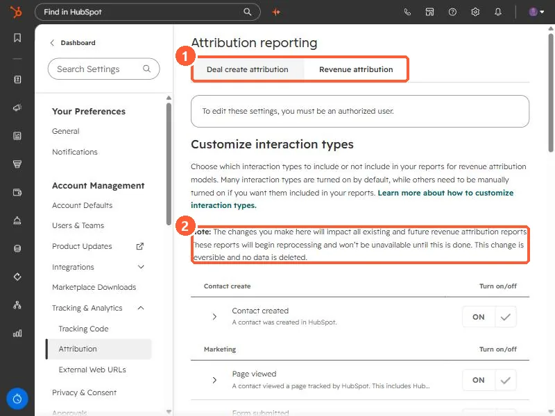
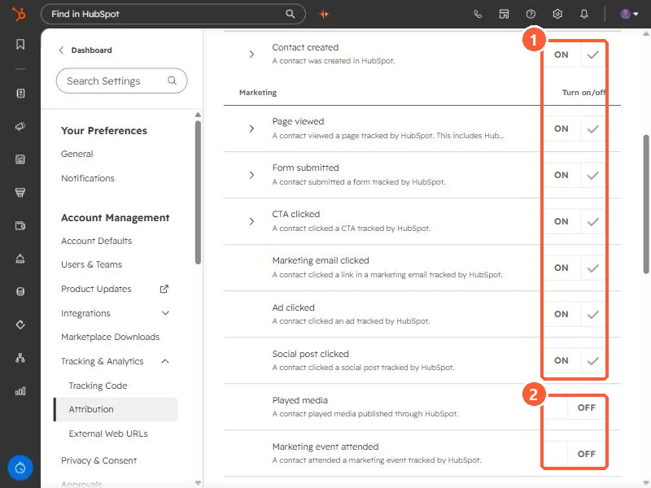

Short answer
Go to Settings, Tracking & Analytics, Attribution. There are tabs for Revenue attribution and Deal create attribution. In my demo, contact created, page views, form submissions, CTA clicks, marketing email clicks, ad clicks, social clicks, and several sales interactions are on. Played media, marketing events, pop-up CTA views and clicks, audio plays, and the sequence interactions are off. HubSpot says a change reprocesses existing reports, which can take up to two days.
1. The settings page
Open Attribution settings. The Revenue attribution tab opens by default.


The page warns that changes affect all existing and future revenue attribution reports, which reprocess and are unavailable until that finishes. It says the change is reversible and no data is deleted. HubSpot's article says reprocessing can take up to two days.
2. On and off in my demo


- On: Contact created, Page viewed, Form submitted, CTA clicked, Marketing email clicked, Ad clicked, Social post clicked, Sales call attended, Sales meeting attended, Sales email reply, Live chat.
- Off: Played media, Marketing event attended, Marketing event registered, CTA views and CTA clicks for pop-up CTAs, Audio plays, the four sequence interactions, and manually added deals and contacts to campaigns.
HubSpot says many types are on by default and others must be turned on. Some, such as Contact enrolled in sequence, need Marketing Hub Enterprise plus Sales Hub Professional or Enterprise.
3. Before you change it
If webinars or events matter to your pipeline, the off-by-default event types mean they get no credit. Decide the list once, change it, and leave it, because each change reprocesses every report. For what a deal needs to show up at all, see revenue attribution deal requirements.